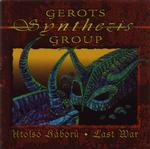

| Artist: | Gerots Synthesis Group |
| Title: | Utolsó Háború/Last War |
| Label: | Stereo Periferic BGCD 065 |
| Length(s): | 46 minutes |
| Year(s) of release: | 2000 |
| Month of review: | [01/2001] |
| 1) | Grave | 2.07 |
| 2) | Praeludium | 2.36 |
| 3) | Area B-15 | 3.59 |
| 4) | Taking Off | 3.30 |
| 5) | Radarzone | 3.59 |
| 6) | Over Stormy Clouds | 3.23 |
| 7) | The Sleeping Town | 5.25 |
| 8) | Target | 7.18 |
| 9) | Fighting For Survival | 2.19 |
| 10) | Vae Victis | 3.05 |
| 11) | Gammaray | 4.14 |
| 12) | Miserere | 3.27 |
Taking Off has a strong bass presence and that ascending build up typical of King Crimson. But on bass and marimba like keyboards, not on guitar. The up-tempo part is typical of ELP and its derivatives (mostly those from Japan). Quite a lot of swing to it.
The violoncello returns on Radarzone which also has a strong, low bass presence in its intro. The music is somewhat fugue like, rather repetitive and the keyboards right after the intro seem a senseless to me. A bit more melody I wouldn't have minded right here. Later on somewhat waltz like keyboards become more bombastic and I like it better than.
Over Stormy Clouds has a strongly recognizable part, the hesitating part that is often repeated. I am not very fond of this part, which sounds a bit like a meandering excursion in the style of Emerson.
The Sleeping Town is a murky sounding piece, sinister and darkish. Like in most tracks there is plenty of variation, but the dissonant keyboards continu to be present and the same holds for the drums. The basic theme is quite nice.
Target has some very tense moments to be admired. Very good, but it is too bad that later on in the track the band starts to fiddle about again. The tune has something classical to it, something that happens more often, but because of the not so slick sound, the band manages to cover it up quite a bit.
After the jazzy bass sounds of Fighting For Survival we come to the highly cymbalic Vae Victis with rather strong pointers to ELP (the bass part). The latter is something I would expect during a live rendition of the track.
Gammaray opens with panicky high keyboards. The song itself is quite up-tempo and continues to keep you on edge. Miserere closes down the album with church organ sounds and hammering percussion. Slightly dissonant, this is not an easy going closer to the album, although you might think so at first. Finally then, some church bells are ringing.